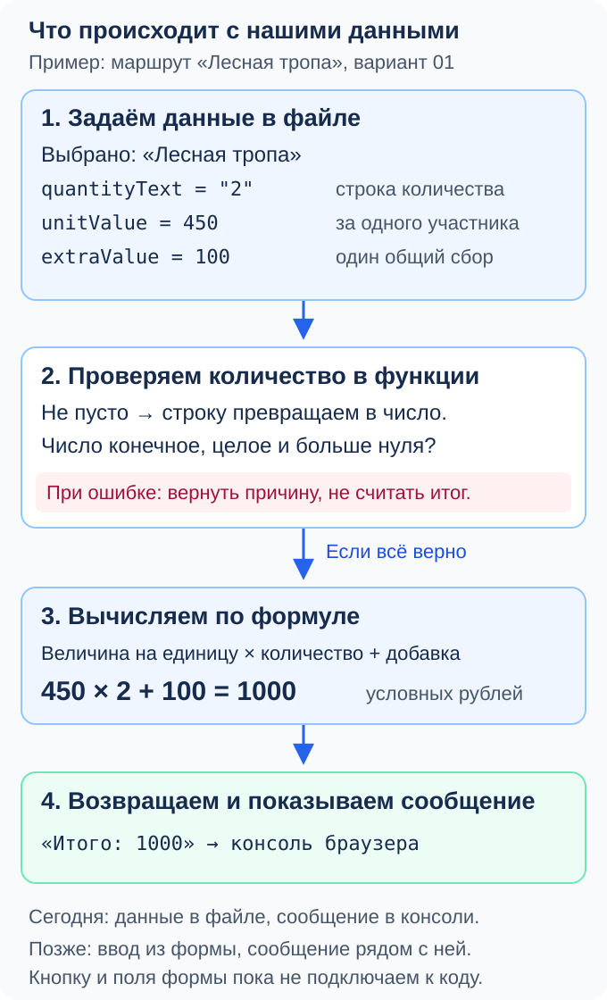
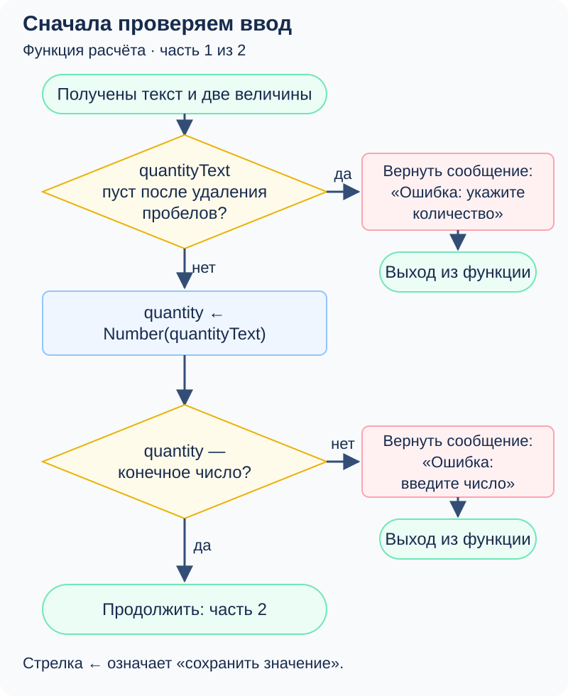
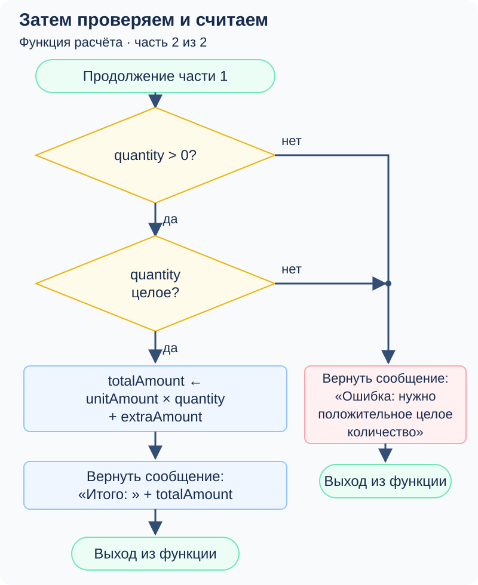
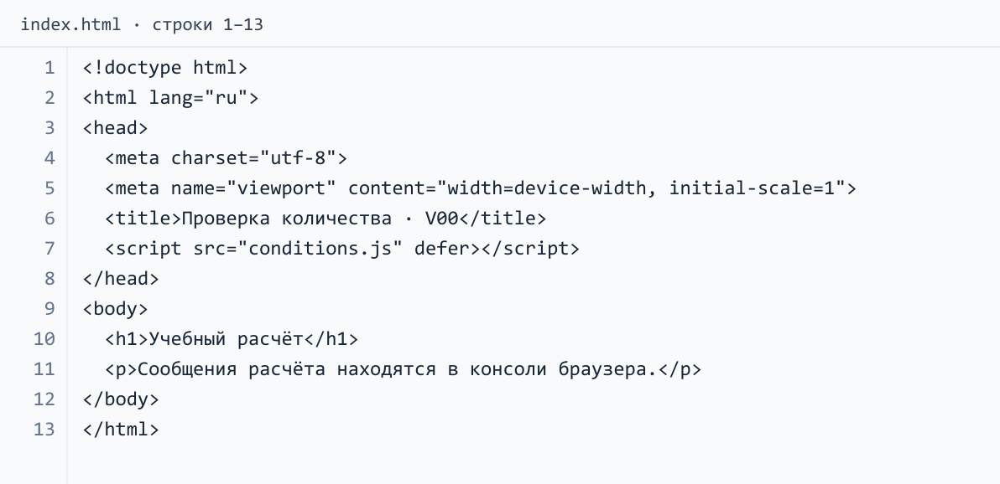
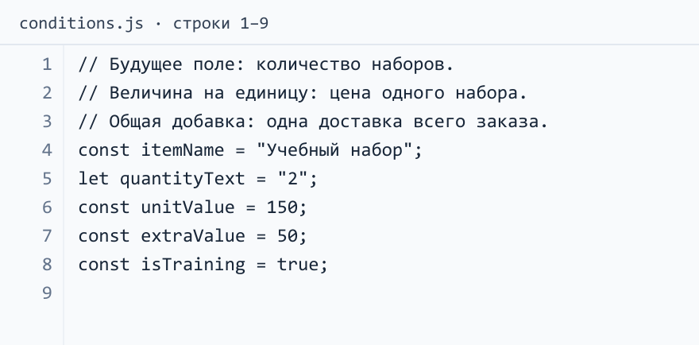
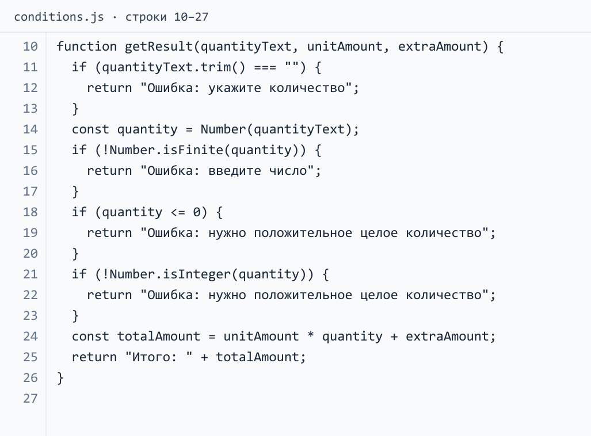
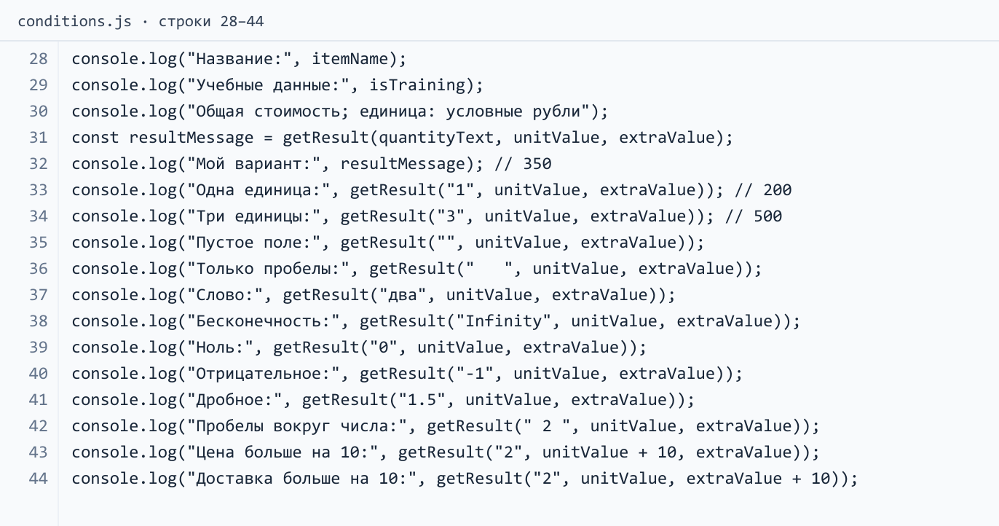

Условия и функции: проверка данных и вычисление результата
Соберём расчёт своего приложения, который не принимает неверное количество. Продолжайте расчёт из пары 19 в своём проекте или откройте демонстрационный пример.
Рабочий ритм: изменить → сохранить → обновить страницу → проверить.
1. Какой результат нужен пользователю приложения
Пользователь выбирает позицию и задаёт количество. Нужен итог либо понятная причина отказа. Весь разбор ведём на варианте 00 — «Учебный набор»: один набор стоит 150 условных рублей, одна доставка всего заказа — 50. Для двух наборов итог: 150 × 2 + 50 = 350. В своей работе используйте смысл величин, числа и единицы из своего расчёта на паре 19.

Откройте свою форму. Найдите поле количества и выбор позиции. Сегодня их изображают данные в файле, а сообщение появляется в консоли. Чтение формы и обработка кнопки будут позже.
2. Подготовьте файл и свои данные
- Рядом со старым
script.jsсоздайтеconditions.js; старый файл сохраните. - В
index.htmlзамените имя подключённого файла наconditions.js. Оставьте одно подключение текущей программы. - Напишите
console.log("Расчёт моего приложения");. Сохраните, откройте главную →F12→ Консоль, обновите страницу. Увидели сообщение — продолжайте. - Перенесите из пары 19 только исходные данные, без прежней формулы и вывода.
| Переменная JavaScript | Смысл величины |
|---|---|
quantityText |
текст количества — строка в кавычках |
unitValue |
величина на единицу — число |
extraValue |
общая добавка — число, учитывается один раз |
itemName |
название выбранной позиции |
isTraining |
признак учебных данных; в формулу не входит |
Сделайте: выведите название, количество и обе числовые величины. Комментариями // подпишите, что именно считается в вашем приложении. Флажки, пожелания и ползунок пока в расчёте не участвуют.
Проверьте: typeof quantityText даёт string, typeof unitValue — number. Числа записаны без единиц измерения и кавычек.
3. Функция получает данные и отдаёт сообщение
Добавьте после исходных данных каркас:
function getResult(quantityText, unitAmount, extraAmount) {
return "Расчёт пока не собран";
}
Три имени в скобках — параметры, то есть полученные значения внутри функции. При вызове передайте по порядку: свою строку количества, unitValue, extraValue. Конкретные переданные значения называются аргументами.
Сделайте: ниже функции вызовите её, сохраните возвращённое значение в const resultMessage, затем выведите эту переменную. Ожидается текст заглушки. return отдаёт значение и завершает вызов; для вывода нужен отдельный console.log(...).
Замените заглушку тремя действиями:
| Действие | Опора для записи JavaScript |
|---|---|
| quantity = Number(quantityText) | const quantity = Number(quantityText); |
| totalAmount = unitAmount × quantity + extraAmount | Соберите формулу из параметров и сохраните в totalAmount |
| Вернуть сообщение с итогом | Форма команды: return "Подпись: " + value; — подставьте "Итого: " и свою переменную |
Проверьте: исходное количество даёт итог пары 19. Увеличьте количество на 1, предскажите и проверьте новый итог, верните исходное. Выведите рядом смысл результата и единицу своего варианта. Внутреннюю totalAmount снаружи не используйте — там есть возвращённое сообщение.
Теперь передайте пустую строку: сумма всё равно вычисляется. Исправим этот дефект.
4. По блок-схеме проверяем исходный текст
Как читать схемы: овал — начало, продолжение или выход; прямоугольник — действие; ромб — вопрос с ветвями «да/нет». quantity = Number(quantityText) означает «сохранить результат преобразования в quantity». На схемах используются те же имена переменных и параметров, что в коде; = обозначает присваивание, как в JavaScript, а === — сравнение. Стрелки между блоками показывают порядок выполнения.

Где: внутри getResult, перед формулой.
- До
Number(...)добавьте проверку пустого текста:
if (quantityText.trim() === "") {
return "Ошибка: укажите количество";
}
trim() убирает крайние пробелы; === сравнивает, а = присваивает. Если условие if верно, выполняется блок в фигурных скобках. После return этот вызов дальше не идёт.
- После
Number(...)самостоятельно добавьте отказ, если результат не является конечным числом. Опоры:
| Запись | Значение |
|---|---|
Number.isFinite(quantity) |
true для конечного числа; false для NaN и бесконечности |
! перед проверкой |
Меняет ответ на противоположный |
return "Ошибка: введите число"; |
Завершает неверный вызов |
В ромбе задан положительный вопрос, а код отказа проверяет противоположное условие. Сопоставьте его с ветвью «нет».
Проверьте: "" и " " → «укажите количество»; "два" и "Infinity" → «введите число»; " 2 " → итог для двух единиц. Проследите пальцем, где каждый путь заканчивается.
5. По блок-схеме разрешаем расчёт

Где: после проверки конечного числа, до формулы. Допишите два отдельных блока if, как на предыдущем шаге.
| Когда отказать | Условие JavaScript | Что вернуть |
|---|---|---|
| Количество не больше нуля | quantity <= 0 |
"Ошибка: нужно положительное целое количество" |
| Количество не целое | !Number.isInteger(quantity) |
То же сообщение |
Number.isInteger(2) даёт true, а Number.isInteger(1.5) — false. После отказа else не нужен: return уже завершил вызов.
Проверьте: "0", "-1", "1.5" → ошибка; "1" → расчёт. Найдите на схемах путь каждого значения и соответствующие строки своей функции.
6. Сохраните испытания
Внизу файла оставьте исходные данные и одну функцию. Добавьте подписанные вызовы для всех строк таблицы. Меняется первый аргумент, свои две величины остаются прежними.
| Случай | Первый аргумент | Ожидаемый результат |
|---|---|---|
| Мой вариант | Исходное количество | Итог пары 19 |
| Одна единица | "1" |
Величина на единицу + добавка |
| Три единицы | "3" |
Тройная величина на единицу + добавка |
| Пустое поле | "" |
Укажите количество |
| Только пробелы | " " |
Укажите количество |
| Слово | "два" |
Введите число |
| Бесконечность | "Infinity" |
Введите число |
| Ноль | "0" |
Положительное целое количество |
| Отрицательное | "-1" |
Положительное целое количество |
| Дробное | "1.5" |
Положительное целое количество |
| Пробелы вокруг числа | " 2 " |
Итог для двух единиц |
Ожидаемые итоги трёх обычных вызовов посчитайте заранее и запишите комментариями. Ошибочные вызовы не должны содержать рассчитанной суммы.
Добавьте ещё две проверки на две единицы:
- Увеличьте только величину на единицу на 10 → итог больше на 20.
- Увеличьте только общую добавку на 10 → итог больше на 10.
Исходные константы не меняйте: передайте изменённые значения отдельными аргументами. Если разница неверна, проверьте, что формула использует параметры, а добавка прибавляется один раз.
Покажите результат
Покажите подключение файла, собственную функцию и все 13 подписанных испытаний. По выбранному преподавателем входу проведите путь на схемах, найдите этот путь в коде, предскажите результат и запустите. Назовите будущее поле ввода и место сообщения. Отдельный отчёт не нужен.
Если закончили раньше
Перенесите проверку пустого текста ниже проверки положительности. Предскажите результат для "", запустите, объясните изменение и восстановите порядок. Снова выполните испытания.
Затем самостоятельно напишите getQuantityMessage(quantityText): те же правила количества, но сообщение о допустимости без расчёта итога. Объясните, где такая функция пригодится форме; испытайте пустую строку, дробь и положительное целое число.
Если результат не совпал
| Симптом | Что проверить |
|---|---|
trim is not a function |
Первый аргумент — строка |
ReferenceError |
Имена и регистр; внутренние переменные не используются снаружи |
undefined вместо сообщения |
После вычисления есть return |
| Неверный ввод дошёл до формулы | Условие и направление ветви; проверка стоит до вычисления |
SyntaxError |
Скобки, кавычки, запятые между параметрами |
Подсказки для разбора
На изображениях разобран постоянный вариант 00 «Учебный набор». Сначала соберите функцию по шагам выше и проверьте её. Затем раскройте нужную подсказку: код показан изображениями, а пояснения помогают найти причину расхождения. Изображения JavaScript идут подряд и составляют один файл conditions.js; номера строк продолжаются от части к части. Для чтения с телефона откройте изображение отдельно и увеличьте его.
Подключение программы: index.html
Для отдельного показа создайте папку Variant00-conditions. Сохраните в ней HTML-страницу и conditions.js рядом. При работе со своим проектом достаточно заменить подключение программы в существующем index.html.


conditions.js, часть 1: исходные данные
Количество пока задано строкой в файле. Цена одного набора — 150, одна доставка всего заказа — 50. Признак учебных данных выводится отдельно и в формулу не входит.


conditions.js, часть 2: проверка и возврат результата
Проследите путь одного значения до первого выполненного return. Пустую строку проверяют до преобразования в число; остальные отказы тоже стоят перед формулой. Возврат и вывод — разные действия: функция отдаёт сообщение, а вызывающая программа показывает его. Значения передаются параметрам по порядку аргументов.


conditions.js, часть 3: вызовы и испытания
Сохраните файлы в UTF-8, откройте HTML, затем F12 → Console / Консоль и обновите страницу. Последние два результата — «Итого: 370» и «Итого: 360». Для ошибочных входов функция возвращает причину без рассчитанной суммы. Числовые аргументы меняются в отдельных вызовах; исходные константы сохраняются.


Пример считает стоимость наборов, а в своём варианте вы сохраняете собственные величины и единицы. Сверяйте смысл действий и результаты; одного совпадения текста программы недостаточно, чтобы объяснить её работу.
Демонстрационный пример
Открыть пример
Постоянное задание для разбора преподавателем. Продолжает расчёт пары 19. Студенты применяют этот способ к своим данным, а не заменяют свой проект наборами.
Что должно уметь приложение
Человек выбирает «Учебный набор» и указывает количество. Нужен ответ: сколько стоит весь заказ с одной доставкой. Пустое поле, слово, ноль, отрицательное или дробное количество должны давать понятное сообщение вместо суммы.
Сегодня количество изображается строкой в файле, результат выводится в консоль. В будущем строка придёт из поля количества, а сообщение появится рядом с формой. Чтение HTML и обработка кнопки сегодня не выполняются.
| Что означает | Внешнее имя | Данные |
|---|---|---|
| Выбранная позиция | itemName |
"Учебный набор" |
| Содержимое будущего поля | quantityText |
"2" |
| Цена одного набора | unitValue |
150 условных рублей |
| Одна доставка всего заказа | extraValue |
50 условных рублей |
Все данные вымышлены. Формула: цена одного набора × количество + одна доставка. Для двух наборов: 150 × 2 + 50 = 350.
Соберите и проверьте
- Подключите отдельный
conditions.jsк главной странице. Для автономного разбора достаточно обычной HTML-страницы с подключением этого файла; оформление не требуется. - Объявите исходные данные. Создайте
getResult(quantityText, unitAmount, extraAmount)и один вызов; сохраните результат вызова в переменную, выведите её. - Внутри функции преобразуйте строку в число и соберите формулу из параметров. Верните строку
Итого:с вычисленным значением. - До преобразования добавьте отказ для пустого текста, включая одни пробелы.
- После преобразования добавьте отказ для нечислового и бесконечного значения.
- Перед формулой добавьте отдельные отказы для неположительного и нецелого количества.
- Сохраните одиннадцать подписанных испытаний из статьи. Добавьте две проверки изменения числовых аргументов.
Функция объявляется один раз. Её полную реализацию соберите по шагам статьи; готовое число 350 не подставляется вместо вычисления.
С чем сравнить результат
| Количество | Ожидаемое сообщение |
|---|---|
"2" |
Итого: 350 |
"1" |
Итого: 200 |
"3" |
Итого: 500 |
"", " " |
Ошибка: укажите количество |
"два", "Infinity" |
Ошибка: введите число |
"0", "-1", "1.5" |
Ошибка: нужно положительное целое количество |
" 2 " |
Итого: 350 |
При двух наборах увеличение цены одного набора со 150 до 160 даёт 370. Увеличение только доставки с 50 до 60 даёт 360. Исходные константы сохраняются: эти опыты — отдельные вызовы с другими аргументами.
Покажите: подключение файла, самостоятельно собранную функцию, результаты испытаний и путь одного неверного значения до первого выполненного return. Назовите, откуда в будущем придёт строка и где пользователь увидит сообщение. Отдельного отчёта нет.
Подсказки с изображениями кода находятся в основной статье пары 20.